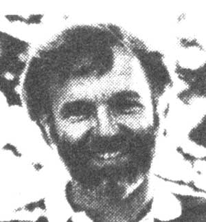

HAIR ANALYSIS: IS IT WORTHWHILE?
This issue's column was guest-written-for Dr. Tom Ferguson - by a contributor to Medical Self-
Care magazine.
Few areas of contemporary medicine are as confusing or as controversial as hair analysis. While most mainstream doctors scoff at the practice, proponents claim that analysis of hair is an accurate and painless way to scientifically evaluate the levels of nutritional minerals and toxic metals in the body. "The hair," says one advocate, "is a recording filament that reflects changes (in the tissue levels) of many elements over long periods of time and thus furnishes a printout' of past nutritional events (and toxic exposures). Hair is easily sampled, shipped, and analyzed. Hair analysis will soon become as important to medical practice as blood and urine tests."
But are these claims justified? Is hair analysis as valuable as some people say?
A REVEALING TEST
The procedure, which costs from $25 to $50, requires cutting a three-teaspoon sample of new growth from the nape of the neck (some practitioners prefer to analyze pubic hair, because it is less likely to pick up contaminants from the environment). The shorn locks are then sent to a laboratory, along with such pertinent information as what shampoo you use and whether you dye or bleach your hair (such substances can, of course, affect the test). There are more than a dozen such labs in this country.
At the lab, the sample is cleaned and then put through a number of spectrographic processes capable of identifying as many as 40 trace elements. The results are recorded by a computer, and a printout - which often contains suggestions for mineral supplements to correct revealed deficiencies - is mailed to the physician, health practitioner, or individual client (some labs offer their services to the public, while others will perform work only for doctors and other medical professionals).
USES
So far, the most accepted application of hair analysis has been its use as a detector of heavy-metal pollutants. In a 1980 report, the U.S. Environmental Protection Agency concluded that "human hair can be used effectively for biological monitoring of the highest priority toxic trace metals . . .lead, cadmium, mercury, and arsenic".
Hair analysis also has been employed as an aid in the control of diabetes (by revealing levels of chromium, which is important in the regulation of blood sugar) . . . as a tool for helping to diagnose illnesses related to mineral deficiencies . . . as an indicator of drug abuse (by detecting the presence of such substances as PCP, dopamine, amphetamines, and barbiturates) . . . and even as a screening procedure to help uncover learning disabilities in children (mineral levels in such youngsters' bodies are often markedly abnormal).
However, hair analysis is most widely used-and provokes the most controversy - in the field of nutrition, where it is employed as an indicator of essential trace elements such as zinc, calcium, iron, and selenium. Some physicians prescribe mineral supplements solely on the basis of hair analysis results, while others warn that the procedure alone is not adequate for diagnosing mineral deficiencies and should be viewed only as one of several necessary screening procedures. "You must conduct blood and urine tests to determine what the body's true tissue mineral stores are," says Dr. Russell M. Jaffe, a biochemist and physician. "Too many nutritional doctors stop with hair analysis."
Not only the doctors but also the hairan - alysis labs are frequently criticized. Since many labs sell mineral supplements to correct the deficiencies that their analyses allegedly detect, they have been accused of conflict of interest. "That's the downfall of hair analysis," says Dr. Sheldon Margen, a physician/nutritionist at the University of California's Berkeley campus and consultant to the 1977 Senate Select Committee on Nutritional Goals for the United States. "If they didn't try to pitch mineral supplements, the labs wouldn't be all that bad. But they tell people they have mineral deficiencies, then they tell them they'd better take their supplements, even though no one has checked out other clinical information that might indicate that their body stores are adequate."
THE PERILS OF DO-IT-YOURSELF CHELATION
Hair-analysis laboratories have also been criticized for not sufficiently warning clients about the risks of self-prescribed chelation (pronounced key-lation) therapy, the process used to eliminate toxic metals. In the body, heavy metals become positively charged. Chelation agents such as penicillamine, on the other hand, take on a negative charge and thus bind the heavy metals and hasten their excretion. Such therapy can be dangerous unless monitored properly by a physician, because the substances used remove not only toxic minerals but essential minerals as well . . . and serious disease can result: Excessive calcium loss, for instance, can lead to osteoporosis (brittle bones) or heart attack.
The critics charge that hair-analysis clients sometimes become unduly alarmed by test results that show the presence of heavy metals. And in their zeal to eliminate these substances from their bodies, such people often self-prescribe potentially harmful doses of chelating agents. Because of this danger, several states, including Wisconsin and Minnesota, have required hair-analysis labs to hire staff physicians who, presumably, can provide adequate explanations of test results and can supervise any ensuing chelation therapy.
A LACK OF STANDARDIZATION
Although several studies suggest that hair analysis holds promise for the diagnosis of illness and nutritional deficiencies, it remains unaccepted by many professionals, since these men and women don't consider the results sufficiently consistent and reliable. To a large degree, this is because the various labs use different cleaning and analytic techniques and - as a consequence - can obtain different readings from the same sample.
An effort to standardize measurement and evaluation processes is now under way, but-at this point - the industry remains divided, with some labs prescribing one "standard" procedure and others a different method.
GROWING INTEREST
According to one estimate, only about one percent of the doctors in the United States routinely order hair analysis as an initial screening test. But the process is expected to become more widely accepted as new research confirms its clinical value and as standardization of the industry gradually becomes a reality.
In my opinion, hair analysis is not the panacea some proponents purport, but it is a valuable tool for diagnosing several illnesses and for determining the levels of essential and toxic elements. Perhaps in time - after the industry adopts uniform processes and eliminates its conflict-of-interest problems - the field will move from its present position at the fringes of modern medicine to become standard procedure.
EDITOR'S NOTE: For further information on this subject, you may want to read Trace Elements, Hair Analysis and Nutrition by Richard A. Passwater, Ph.D. and Elmer M. Cranton, M.D. (Keats, $14.95). Also, you can write for free literature on hair analysis from either of the following labs: Doctor's Data, Inc., Dept. TMEN, P.O. Box 111, West Chicago, Illinois 60185, or MineraLab, Dept. TMEN, P.O. Box 5012, Hayward, California 94540.
Medical Self-Care, Dr. Tom Ferguson's quarterly journal, is available for $15 per year from Medical Self-Care, Dept. TMEN, P.O. Box 717, Inverness, California 94937. A sam ple issue of the publication costs $4.00. Dr. Ferguson's book, which is also titled Medical Self-Care, can be ordered for $10 postpaid from the same address.
|
 |
|
|